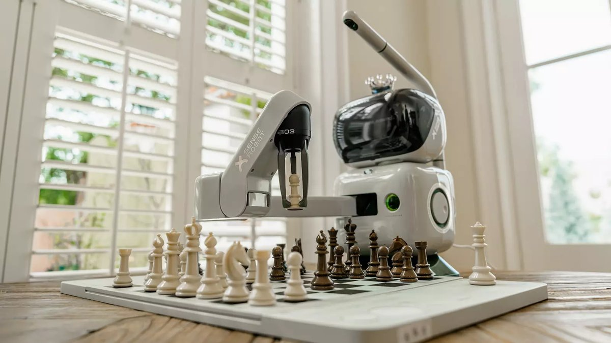
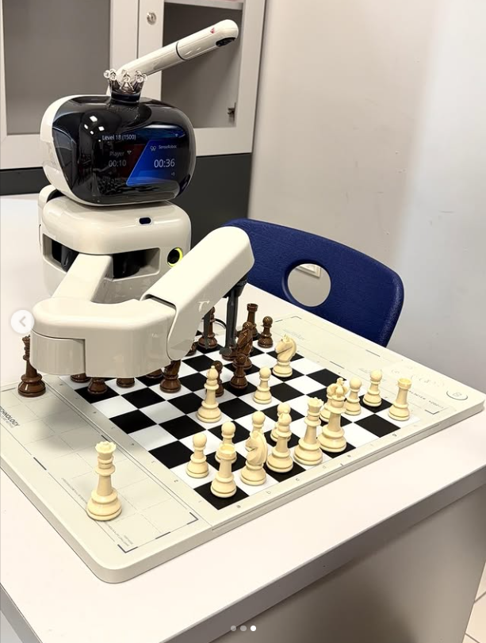

Robo Satranç Akademisi; çocuklar, gençler ve veliler için güven veren,
yenilikçi ve gelişim odaklı bir satranç ekosistemi sunar. Akademimizde
öğrenciler yalnızca satranç öğrenmez, satranç robotu ile çalışarak
stratejiyi teknolojiyle bir arada deneyimler.
Robo Satranç AkademisiKurumsal, yenilikçi ve teknoloji destekli satranç eğitimi
DisiplinDüzenli ve hedef odaklı eğitim akışıDikkatOdak, sabır ve karar verme becerisiTeknolojiSatranç robotu ile yenilikçi deneyim
Öne çıkan fark
Satranç robotu ile gerçek zamanlı çalışma deneyimi
Öğrencilerimiz, klasik eğitim yaklaşımının ötesine geçerek teknoloji
destekli uygulamalarla düşünme hızını, hamle kalitesini ve özgüvenini geliştirir.

Satranç robotu ile birebir etkileşim sunan yeni nesil eğitim deneyimi.
Hakkımızda
Güçlü zihinler, doğru rehberlik ve ilham veren bir ortam.
Robo Satranç Akademisi, satrancı yalnızca bir oyun olarak değil; dikkat,
planlama, strateji ve karakter gelişimi sağlayan güçlü bir eğitim aracı
olarak görür. Öğrencilerimizin bireysel potansiyelini açığa çıkaran
sıcak ama kurumsal bir öğrenme ortamı sunarız.
Eğitim yaklaşımımız; yaş ve seviye farklarını gözeten, motivasyonu yüksek
tutan ve düzenli gelişimi takip eden bir yapı üzerine kuruludur. Satranç,
çocuklara ve gençlere sabır, disiplin, dikkat, öngörü ve karar verme becerisi kazandırır.
Neden Robo Satranç Akademisi?
Her öğrencinin gelişimine dokunan, fark yaratan bir eğitim modeli.
01
Satranç robotu ile çalışma deneyimi
Teknoloji destekli antrenmanlarla öğrenciler uygulamalı ve akılda kalıcı bir süreç yaşar.
02
Modern eğitim yaklaşımı
Güncel, planlı ve motive edici bir içerik yapısı ile öğrenme süreci canlı tutulur.
03
Bireysel gelişim odaklı eğitim
Her öğrencinin seviyesi, öğrenme temposu ve hedefleri dikkate alınır.
04
Stratejik düşünme becerisi
Plan kurma, alternatif üretme ve doğru zamanda doğru karar alma becerileri güçlenir.
05
Dikkat ve konsantrasyon gelişimi
Odak süresi artar, sabırlı düşünme ve detayları fark etme alışkanlığı gelişir.
06
Eğlenceli ve yenilikçi öğrenme ortamı
Kurumsal kaliteyi sıcak iletişimle birleştiren atmosfer, öğrenmeyi keyifli hale getirir.
Satranç Robotu
Teknolojiyi eğitimin merkezine alan özel deneyim.
Akademimizin en dikkat çekici gücü, öğrencilerin satranç robotu ile çalışma
fırsatı elde etmesidir. Bu deneyim; hamle kalitesini artırmanın yanında,
teknolojiyi bilinçli kullanma alışkanlığı, farklı rakiplere uyum sağlama ve
özgüvenli karar verme becerisi kazandırır.
Satranç robotu, öğrenmeyi somutlaştırır. Öğrenciler teoriyi pratiğe taşırken,
teknolojiyle desteklenen bu özel ortam sayesinde satranca daha yüksek motivasyonla bağlanır.
Yenilikçi Eğitim

Gerçek tahtada, gerçek hamlelerle desteklenen robot deneyimi.
Uygulamalı ÖğrenmeGerçek zamanlı geri bildirim ve deneyim odaklı çalışma
Teknoloji + StratejiEğitimde yenilikçi yaklaşım ile akılda kalıcı ilerleme
Eğitim Programları
Her seviyeye uygun yapılandırılmış gelişim programları.
Başlangıç Seviyesi
Temelleri sağlam atın
Taşların hareketi, temel kurallar, açılış mantığı ve dikkat geliştirme çalışmalarıyla güvenli başlangıç.
Önerilen grup: Yeni başlayan çocuklar ve gençler
Orta Seviye
Plan kurmayı öğrenin
Taktik motifler, hesaplama becerisi, oyun sonu mantığı ve maç analizi ile istikrarlı gelişim süreci.
Önerilen grup: Temel bilgileri oturmuş öğrenciler
İleri Seviye
Rekabetçi performansı yükseltin
Derin analiz, turnuva hazırlığı, rakip okuma ve stratejik planlama ile yüksek seviyeli çalışma ortamı.
Önerilen grup: Turnuva hedefi olan öğrenciler
Galeri / Akademi Atmosferi
Odak, disiplin ve ilham veren bir eğitim ortamı.
Sık Sorulan Sorular
Velilerin ve öğrencilerin en çok merak ettiği başlıklar.
Programlarımız; başlangıç seviyesinden ileri seviyeye kadar çocuklar, gençler ve gelişimini sürdürmek isteyen tüm öğrenciler için uygundur.
Satranç robotu, öğrencilerin uygulamalı çalışma yapmasına destek olur. Eğitmen yönlendirmesiyle öğrenciler teknoloji destekli antrenman deneyimi yaşar.
İhtiyaca göre bireysel ya da grup dersleri planlanabilir. Akademi yapımız öğrencinin seviyesine ve hedeflerine göre esnek çözümler sunar.
Kontenjan durumuna göre tanışma ve değerlendirme amacıyla deneme dersi planlanabilir. Güncel bilgi için iletişim bölümünden bize ulaşabilirsiniz.
Telefon, WhatsApp veya Instagram üzerinden bizimle iletişime geçebilirsiniz. Size uygun program için hızlıca dönüş sağlanır.
İletişim / Başvuru
Çocuğunuzun ya da sizin satranç yolculuğunuz için doğru başlangıç burada.
Robo Satranç Akademisi ile tanışın; stratejiyi, disiplini ve teknoloji destekli
eğitimi aynı çatı altında deneyimleyin. Bilgi almak, kayıt sürecini öğrenmek
veya deneme dersi hakkında konuşmak için bize ulaşın.